Project File // FILTER-01 · ESB Technical Design · UC Berkeley
Mechanical Emergency Water Filtration System
A purely mechanical, human-powered water filtration system for disaster relief, designed to deliver 10 L/min of clean water through a reusable 0.2 µm ceramic barrier, drawing from ambient unpressurized water with no electricity. A self-priming pump feeds a ceramic bank, a pneumatic accumulator fires reverse-flow backwash pulses so the filters are reusable rather than disposable, and an elevated tank stores potential energy to keep water flowing after power input stops. I took it end to end: first-principles analysis, five MATLAB models, full CAD, FEA, and CFD.
Clean Output10 L/min
Filtration0.2 µm
Peak Power~95 W
Membrane Area~3 m²
Coast-Down~3 min
Vessel FoS~32×
01
Requirements
Problem & Constraints
The brief was a mechanical water filter for disaster zones, bound by six hard constraints: a reusable 0.2 µm filter with no disposable cartridges, at least 10 L/min of throughput, operation on ambient unpressurized water, purely mechanical operation with no electricity, semi-automatic behavior that keeps dispensing for 3–5 minutes after human power stops, and a power-input-agnostic drive shaft with one-way transmission so it couples to any rotating source.
On top of those I imposed my own criteria, portability, low maintenance, low cost, and ease of manufacture, and framed the design around two stated assumptions: trained relief operators are present and supervising, and chemical post-treatment follows storage. Those assumptions matter because they bound what the mechanical system has to do on its own.
02
Ideation · Architecture
Concept Development & Final Schematic
I iterated through three architectures. The first concept ran a double-acting piston pump through a pre-filter and primary filter into a pneumatic accumulator, but the piston pump needed a linkage to convert rotary input into reciprocating motion. The second explored a rotary ceramic crossflow arrangement with an elevated tank, which is elegantly self-cleaning but demands motor-level rpm that blows the human-power budget.
The final architecture is dead-end filtration with accumulator backwash: a mesh strainer and pre-filter protect a five-element ceramic bank, a self-priming flexible-impeller pump drives the flow, a nitrogen-charged accumulator fires reverse pulses to lift the cake off the membrane, and an elevated tank provides gravity-fed coast-down. The schematic captures the valve logic, a main valve, a dirty-line drain, and an isolation valve, that switches the system between filtration and backwash modes.
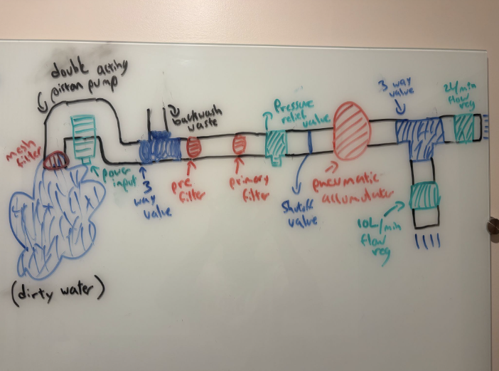
Concept 1 · piston pump architecture
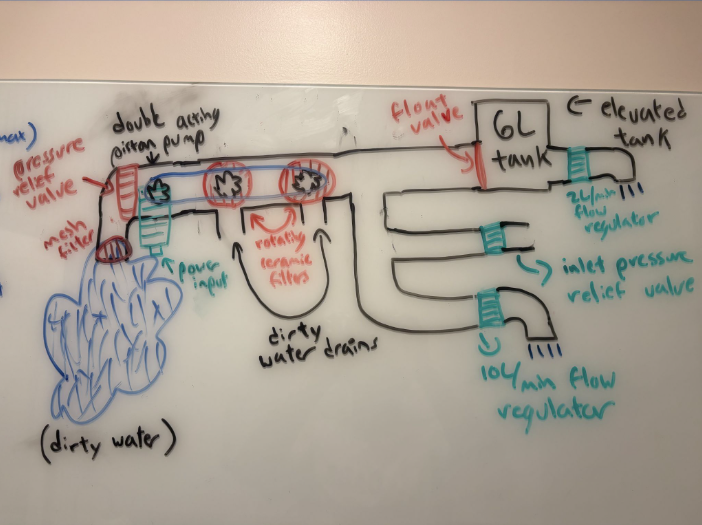
Concept 2 · rotary crossflow
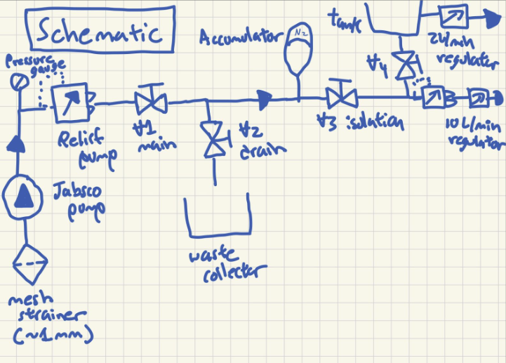
Final schematic · valve logic & flow path
03
Analysis · MATLAB
Power Delivery
I modeled the full pressure budget in MATLAB, summing the membrane Darcy resistance, the fouling cake, the pre-filter, pipe friction via Haaland and Darcy–Weisbach, and static lift, then divided hydraulic power by pump and drivetrain efficiencies to size the required human input. The worst case is the fill-and-dispense phase on fouled filters, where the pump must feed the 10 L/min output and top up the elevated tank at the same time.
Peak input lands at ~95 W against a 200 W human budget, with steady dispensing near 50 W, comfortably feasible for a person on a crank or bicycle drive. A sensitivity sweep identified the output flow regulator as the single biggest lever on required power, and the flexible-impeller pump's ~50% efficiency as the dominant loss in the chain.
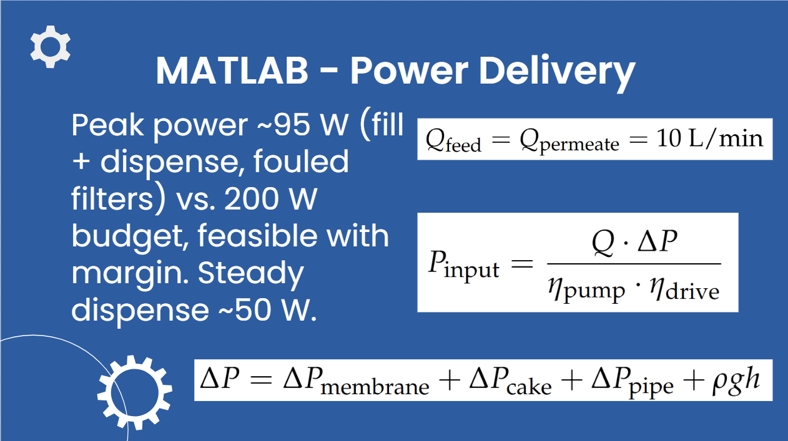
Input power & pressure budget
04
Analysis · MATLAB
Filter Sizing & Backwash Interval
Membrane area follows directly from flow divided by flux. Holding the design flux at 200 LMH, safely below the critical-flux fouling knee, gives roughly 3 m² of 0.2 µm ceramic, about six Atech elements. Modeling cake growth through Darcy's law, where resistance accumulates as the product of specific cake resistance, feed solids, flux, and time, yields the backwash trigger.
The key result is that the interval scales as 1/J²: halving the flux quadruples the run time between cleanings, so a slightly larger, gentler filter pays off far more than linearly. At the design point the system backwashes about every 11 minutes, with the pre-filter's solids load as the dominant lever on run time. The cake parameters are literature-calibrated, so this interval is an estimate I would pin down with a bench test on real source water.
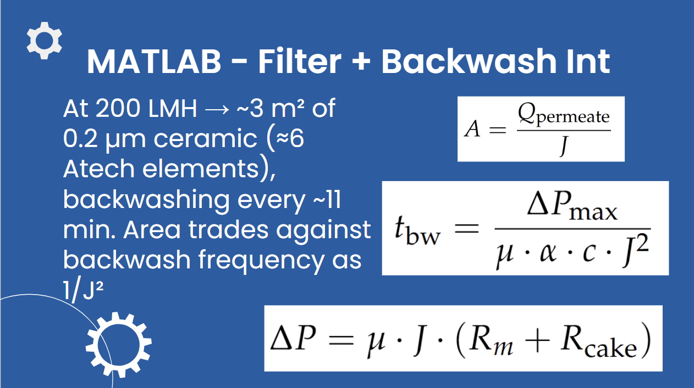
Area, Darcy ΔP & backwash interval
05
Analysis · MATLAB
Accumulator Backwash
The backwash pulse is driven by nitrogen compressed behind a bladder, modeled with Boyle's law. Applying a never-empty rule so the bladder never fully collapses, a 12 L accumulator delivers about 3.5 L usable, roughly 30% of the shell, in a sharp ~11 second pulse.
Because instantaneous flow is proportional to the available pressure, and that pressure decays as the gas expands, the pulse is not constant, it starts strong and tapers. Solving the coupled differential equation shows the discharge volume grows as √t, confirming the decaying shape. Pressure is never the limiting factor (~0.2 bar needed to reverse-flow and lift the cake versus 1.5–3 bar available), so usable volume and duration govern, and the strong initial burst is exactly what cracks the cake loose.
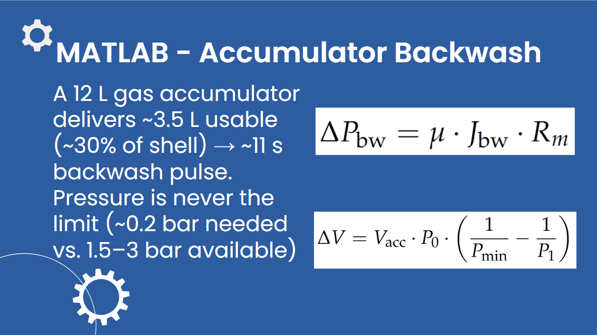
Boyle's-law discharge & reverse ΔP
06
Analysis · MATLAB
Gravity Coast-Down
To satisfy the semi-automatic requirement, the elevated tank dispenses by gravity once human power stops. I solved the draining-tank ODE, Torricelli outflow coupled to a mass balance, both numerically with RK4 and in closed form, using the agreement between the two as a validation cross-check.
A 3.6 mm orifice sustains about 2 L/min for roughly 3 minutes from the 6 L tank, and flow drifts only ~5% across the whole drain because the fixed 1.5 m static head dominates the changing water depth inside the tank. The result is a steady finishing trickle with zero moving parts and no control system, the requirement met by geometry alone.
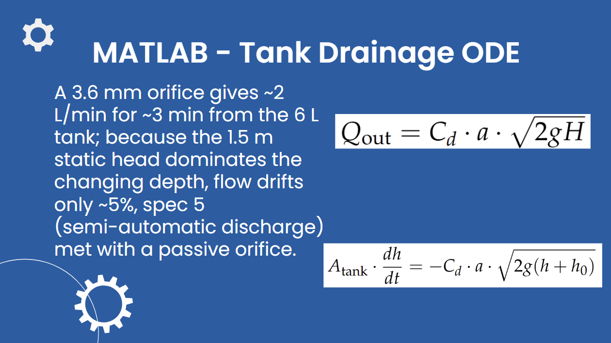
Torricelli drainage ODE
07
Drivetrain
Power-Agnostic Drive & Coupler
The input interface is a clamp coupler paired with a one-way sprag clutch, so the device accepts any rotating power source and will not back-drive under idle input. A keyless chuck on the input stub lets a drill, crank, or bicycle drive clamp straight on, which is what makes the system genuinely power-input-agnostic.
From T = P/ω, the worst-case design torque is about 9 N·m including a 3× service factor at the lowest input speed. Checking friction-grip capacity, a single standard M4 class-12.9 clamp screw holds with roughly 4× margin, so torque capacity is never the binding constraint. The real design concerns are the friction coefficient dropping on a wet shaft and keeping water and grit out of the sprag clutch, which is why a keyed positive drive is the production refinement.
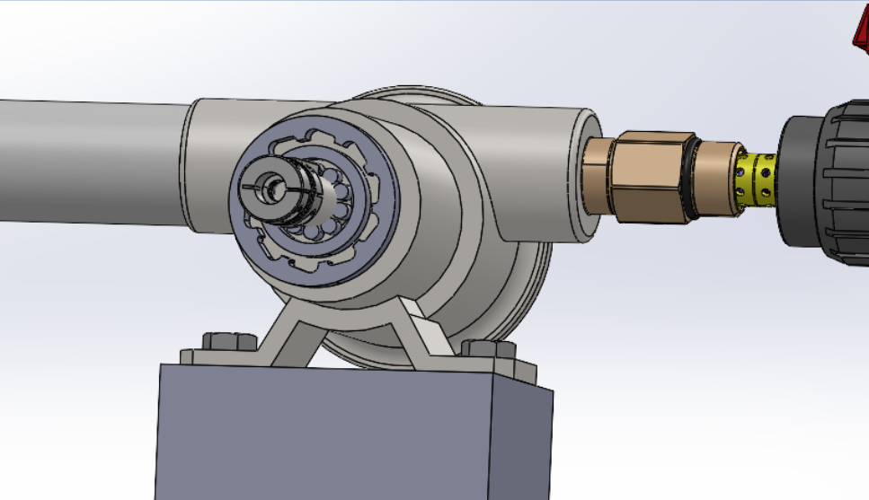
Sprag clutch coupler & keyless chuck input
The complete system was modeled in SolidWorks on a portable, caster-mounted frame. The assembly integrates the mesh strainer, self-priming pump on its saddle mount, inline pre-filter, the horizontal ceramic housing on cradle supports, the pneumatic accumulator, the elevated tank with its float valve, inline pressure gauge, flow regulators, and the full valve network that switches between filtration and backwash.
Packaging drove real decisions: the housing runs horizontally to keep the center of gravity low, the accumulator and tank sit high so gravity does the coast-down work for free, and the drive interface is placed at the frame edge so an external power source can couple to it without reaching into the machine.
Assembly · isometric
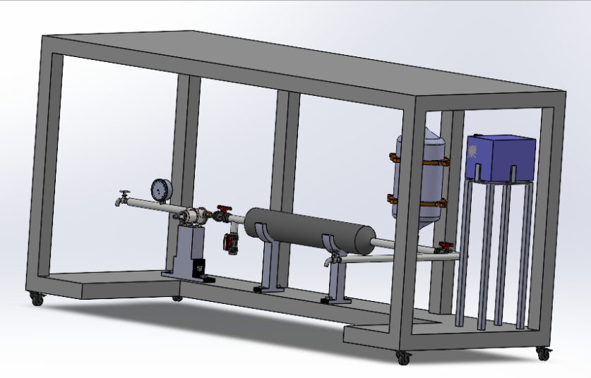
Assembly · side elevation
09
Component Design
Ceramic Housing Pressure Vessel
The ceramic bank lives inside a custom 6061-T6 aluminum pressure vessel, a 130 mm bore, 1.7 m long tube with bolted end caps, rated to the 3 bar relief set-point. Aluminum was chosen for the best strength-to-weight, roughly 7.7 kg versus about 20 kg for the same geometry in stainless, with hard anodizing for freshwater corrosion resistance. For saltwater deployment I would switch to 316 stainless and accept the weight penalty.
The five ceramic monoliths seat into bored pockets and seal with radial O-rings. That choice is deliberate: ceramic is brittle and cannot take a clamping load, so a radial seal is squeezed sideways by interference and energized further by system pressure, sealing with no axial force on the element. The elements are captured between two tube sheets rather than clamped, and the whole bundle lifts out as a serviceable cartridge, which is what makes the filter genuinely reusable.
◈Pressure Vesselimages/filter_vessel1.png
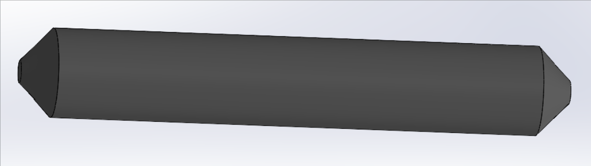
Housing · external geometry
◈Pressure Vesselimages/filter_vessel2.png
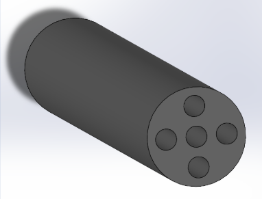
Housing · five-element bore pattern
10
Simulation · FEA
Pressure Vessel FEA
I validated the housing in SolidWorks Simulation against a hand-calculated hoop-stress check, fixing the saddle supports and applying 3 bar internal pressure to the wetted surfaces. The uniform mid-body stress field matches thin-wall theory, which is the cross-check that confirms the model is set up correctly.
Peak von Mises stress is 8.49 MPa against a 275 MPa yield, a factor of safety near 32, so the vessel is loaded to roughly 3% of yield. As expected, the peak sits at a port stress concentration where material is removed for the penetration, with a milder discontinuity stress where the flat end cap restrains the cylinder. Maximum displacement is just 0.014 mm. The honest caveat is that stress concentrations are mesh-sensitive, so a production design would get a mesh-refinement study and a port fillet, though with this much margin the conclusion holds either way.
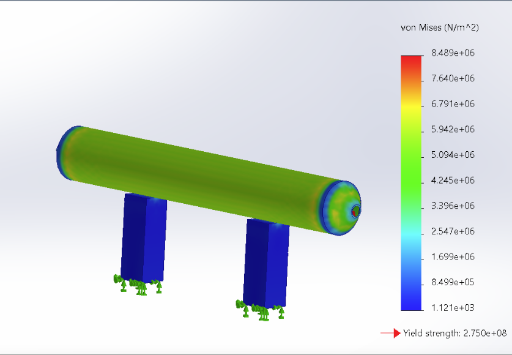
Von Mises · peak 8.49 MPa · FoS ~32
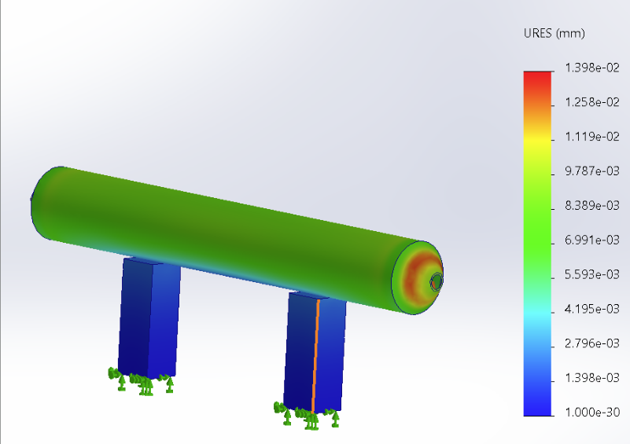
Displacement · max 0.014 mm
11
Simulation · CFD
Backwash Flow Distribution in ANSYS Fluent
A backwash pulse is only useful if it cleans all five elements, so I ran a steady, single-phase ANSYS Fluent study of the reverse flow through the inlet diffuser cone and the five channels. The fluid volume was extracted in SpaceClaim, meshed, and solved with a velocity inlet and pressure outlet, converged to tight residuals with the inlet velocity verified by surface integral.
The cross-sectional velocity contour revealed a flow maldistribution: the top channel carries roughly 5× the velocity of the outer four, meaning the diffuser cone does not split the pulse evenly and some elements would be under-cleaned. That is a real flaw the analysis caught rather than a result that confirmed what I wanted. The near-term mitigation is firing 2–3 pulses per backwash; the proper fix is a flow-distributor plate or a longer diffuser cone, which I would re-run in CFD to verify an even split.
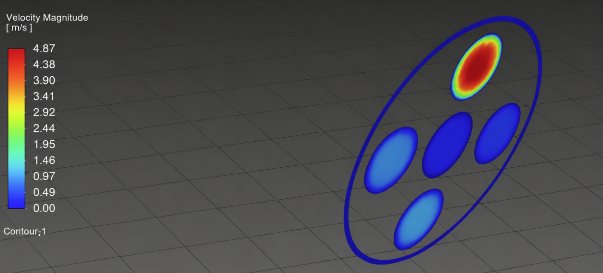
Velocity contour · maldistribution
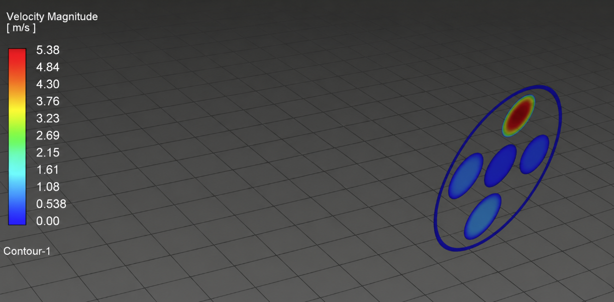
Channel velocity · rescaled legend
12
BOM · Manufacturing
Bill of Materials, Manufacturing & Mass
The full system comes in at roughly 62 kg and ~$2,900 in parts, built mostly from off-the-shelf components around three custom pieces: the ceramic housing, the cart frame, and the mounting brackets.
The housing is machined from 6061-T6 with bolted or tie-rod-clamped end caps, deliberately avoiding welds, since welding 6061 anneals the T6 temper and roughly halves yield strength in the heat-affected zone. The cart is bolt-together T-slot extrusion, requiring no welding or fabrication skill and staying reconfigurable through design iteration. Wetted lines are potable-rated plastic rather than metal, reinforced PVC on the suction side to resist collapse under vacuum and PEX on the pressure side, matched to the 3 bar ambient-temperature duty. The manufacturing strategy is quantity-driven: subtractive machining for a one-off, shifting to extrusion, casting, and stamping at production volume.
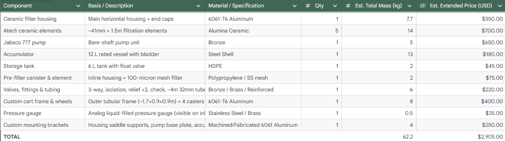
Bill of materials · mass & cost rollup
13
Reflection
Failure Modes & Next Steps
I built an FMEA around the highest-severity risks and paired each with a concrete validation test: bladder or pump-seal leakage causing cross-contamination, checked by a 24-hour pressure-decay hold and a dye trace; impeller wear dropping output below spec, checked by a 100-hour run on turbid water; fouling runaway that backwash cannot recover, checked by tracking peak ΔP across repeated cycles; and coupler slip on a wet shaft, checked by measuring slip torque wet versus dry.
With more time the priorities are clear. First, a bench test on real source water to replace the literature-estimated cake parameters with measured data, which is what turns the backwash interval from an estimate into a number. Second, a flow-distributor plate to resolve the CFD maldistribution so a single pulse cleans every element. Third, a differential-pressure gauge across the bank as a live clogging indicator, with the backwash trigger marked in red on the dial so a non-expert operator knows exactly when to act. Those three moves take a design that is sound on paper and make it proven in the field.